노트
다음 새로운 어휘를 복습하고 기록하세요.
학습 활동을 완료하면서, 각 어휘의 정의와 관련 핵심 용어를 노트에 기록하세요. 학습 활동이 끝나면 다음 각 단어를 사용하여 문단을 작성하세요.
- 발사각(launch angle)
- 초기 속도(initial velocity)
- 포사체(projectile)
- 힘(force)
- 궤적(trajectory)
- 포물선의(parabolic)
- sin
- cos
- 수평(horizontal)
- 수직(vertical)
- 공기 저항(air resistance)
- 각도(angle)
많은 스포츠는 공을 공중으로 던지거나 치는 것을 포함합니다. 다른 스포츠는 선수들이 공중으로 뛰어오르는 것을 필요로 합니다.
생각해 보기
공을 던지거나 치는 것을 포함하는 스포츠를 최소 네 가지 생각해 보세요.
미식축구, 테니스, 농구, 야구, 수구, 크리켓, 축구, 골프 등.
다음 포사체 이미지를 살펴보세요. 그런 다음, 포사체가 발사될 때 이동 거리와 정확도에 영향을 미치는 요인들에 대해 생각해 보세요.

직접 해보기!
다음 시뮬레이션을 사용하여, 여러분이 예측한 요인들이 이동 거리와 정확도에 실제로 영향을 미치는지 확인해 보세요.
목표물을 겨냥하고 어떤 각도와 초기 속력의 조합이 목표물을 맞출 수 있는지 관찰하세요.
접근 가능한 버전은 여기를 누르세요: 포사체 운동(Projectile Motion)(새 창에서 열림)
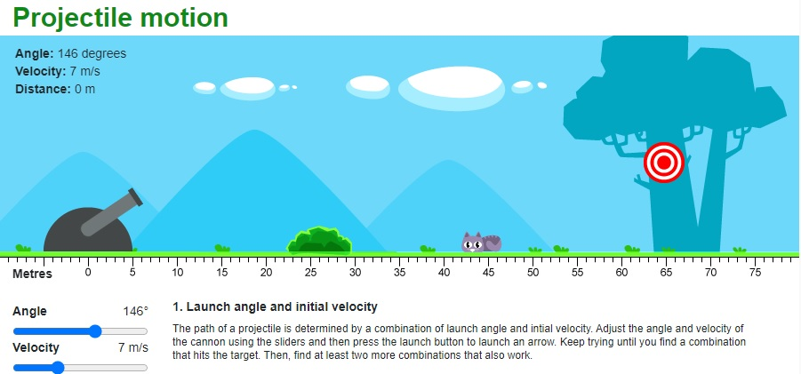
시작 (새 창에서 열림)포사체 운동(Projectile motion)
앞서 ‘생각 열기’ 섹션의 모든 이미지는 포사체를 보여줍니다. 포사체(projectile)란 중력(gravity)만이 작용하는 물체를 말합니다. 공이 놓이면, 공에 작용하는 유일한 힘은 중력입니다. 이는 골프공과 창던지기의 창에도 마찬가지입니다. 물이 분수에서 나올 때도 중력만이 작용하며, 댄서가 공중으로 뛰어오를 때도 중력만이 댄서에게 작용합니다. 이 학습 활동에서는 공기 저항(air resistance)이 무시할 수 있을 정도로 작다고 가정합니다.
포사체가 공중에서 이동하는 경로를 궤적(trajectory)이라고 합니다. 포사체에는 다양한 궤적이 가능합니다.
축구, 미식축구, 배구, 크리켓, 골프 등 많은 스포츠에서 공을 사용합니다. 축구공이 공중으로 차올려졌을 때 어떻게 이동하는지 생각해 보세요. 터치다운 패스를 위해 공중으로 던져진 미식축구공의 경로와 다를까요? 위로 올려 친 배구공은 어떻게 이동할까요? 페어웨이를 따라 날아가는 골프공의 호를 떠올려 보세요. 공은 공중에서 포물선(parabolic) 경로를 따릅니다. 궤적은 포물선의 모양을 따릅니다. 수학 수업에서 포물선을 다룬 적이 있을 것입니다 - 이차방정식(quadratic equation)으로 만들어지는 모양입니다.
공이 발사되면, 선수의 힘은 더 이상 공에 작용하지 않지만, 공은 여전히 중력의 영향을 받습니다. 중력에 의한 가속도(acceleration)가 공의 비행 경로 모양을 결정하며, 이 학습 활동에서 설명하는 모든 포사체는 비슷한 궤적을 따릅니다.
점프를 포함하는 활동에는 허들, 농구, 배구, 높이뛰기, 무용이 있습니다. 공과 마찬가지로, 우리도 점프할 때 포물선 곡선을 따라 이동합니다(실제로는 우리의 질량 중심(centre of mass)이 이 경로를 따릅니다). 지면을 떠나면, 중력의 하향 가속도가 우리의 상향 속도에 영향을 미치고 궁극적으로 우리의 경로를 결정합니다.
포사체 운동을 탐구하면서 이러한 활동과 스포츠를 고려해 보세요. 물체의 궤적이 어떻게 변할 수 있는지 이해하면 선수와 코치가 경기력을 향상시키는 데 도움이 될 수 있습니다.
포사체가 따를 수 있는 궤적의 유형을 공부해 봅시다.
이 모든 예시는 서로 다른 궤적을 가지지만, 물체들은 모두 포사체입니다. 공중에 있을 때 작용하는 유일한 힘이 중력이기 때문입니다.
직접 해보기!
다음 설명을 확인하고, 각 설명이 포사체의 예인지 판단하세요. 각 질문에 대해 올바른 답을 선택한 다음 정답 확인을 눌러 답을 확인하세요.
수직 포사체(Vertical projectiles)
수직으로 운동하는 포사체는 위쪽 또는 아래쪽으로 움직일 수 있습니다.
생각해 보기
돌을 떨어뜨리면 어떤 일이 일어나는지 생각해 보세요. 돌이 땅으로 떨어진다는 것은 알고 있지만, 등속도(constant velocity)로 떨어질까요?
돌은 포사체이므로, 9.8 m/s2의 가속도로 아래로 가속하고 있다는 것을 알 수 있습니다. 이는 매초 속도가 9.8 m/s씩 증가한다는 것을 의미합니다.
다음 그래프는 떨어지는 돌의 위치-시간 그래프입니다.
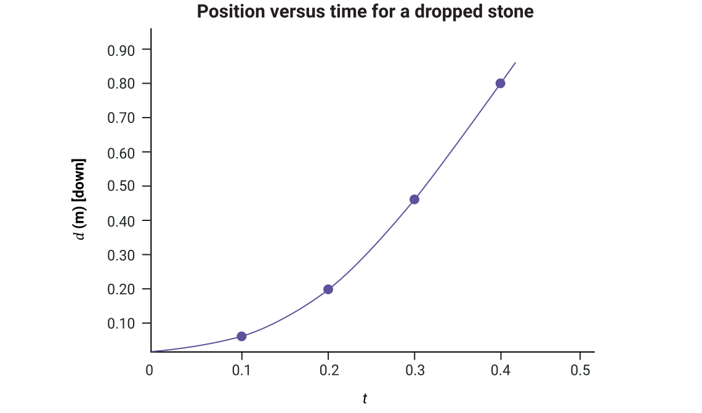
다음 그래프는 떨어지는 돌의 속도-시간 그래프입니다.
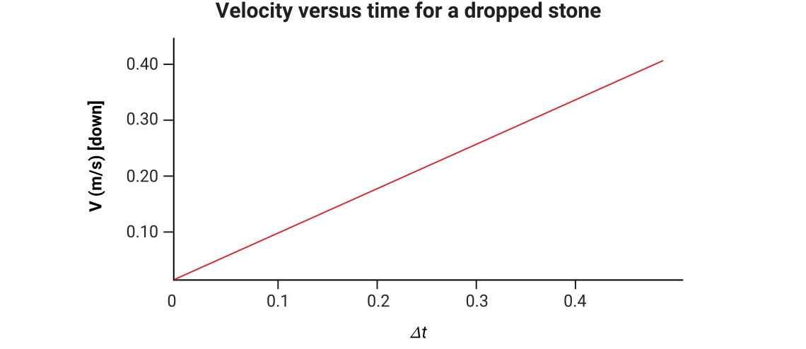
중력 가속도(Acceleration due to gravity)
속도-시간 그래프의 기울기는 다음 그래프에서 구할 수 있으며, 이는 돌이 가속하고 있음을 나타냅니다.
그래프는 매우 기본적이므로, 결과가 100% 정확하지 않을 수 있습니다. 그러나 낙하 물체에 대한 정밀한 실험에 따르면 이 그래프의 기울기는 9.8 m/s2 [아래]입니다. 이 가속도 값 9.8 m/s2 [아래]는 실제로 중력 가속도입니다. 지구 표면 근처에서 공기 중을 이동하는 모든 물체는 중력 가속도의 영향을 받습니다.
물체가 경험하는 정확한 중력의 크기는 세계에서 어디에 있는지에 따라 달라집니다. 지구의 모양은 완벽한 구가 아니며, 고도와 지역 지질학적 특성 등이 중력을 약간 변화시킬 수 있습니다. 예를 들어, Ottawa와 Montréal은 약 9.806 m/s²의 가속도를 경험합니다. Toronto의 중력은 약 9.804 m/s²이고, Vancouver는 9.8099 m/s²입니다. 전 세계 지역 중력 측정값의 평균을 취한 국제 표준값은 9.80665 m/s²로 정의되었습니다. 이 과목에서는 유효 숫자 두 자리로 반올림한 값인 9.8 m/s²를 사용합니다. 공중에서 공을 떨어뜨리면 땅으로 떨어집니다. 지구 표면 근처의 중력으로 인해, 공은 9.8 m/s² [아래]의 균일한 가속도를 경험합니다. 이는 매초 공의 속도가 9.8 m/s씩 변한다는 것을 의미합니다.
직접 해보기!
탐구: 낙하하는 물체
자, 활동을 해봅시다!
플라스틱 물병 두 개를 준비하세요. 하나는 완전히 채우고, 다른 하나에는 물을 소량만 넣으세요. 뚜껑이 단단히 잠겨 있는지 확인하세요!
두 물체를 같은 높이에서 떨어뜨릴 것입니다. 두 물체의 바닥이 같은 높이에서 시작하는 것이 중요합니다. 아래로 던지는 것이 아니라, 그냥 떨어뜨리는 것입니다.
예측하기: 어느 물체가 먼저 땅에 닿을 것이라고 생각하나요? 예측을 기록하세요.
다음으로, 각 물체를 대략 어깨 높이에 놓으세요. 다시 말하지만, 각 물체의 바닥이 같은 높이에서 시작하는 것이 중요합니다.
녹화 장치를 사용하여 물체를 떨어뜨리는 모습을 녹화하세요. 동영상을 재생하여 어느 물체가 먼저 땅에 닿는지 판단하세요. 슬로우 모션으로 확인하면 도움이 됩니다.
녹화할 수 없다면, 물체를 매우 주의 깊게 관찰하세요. 어느 물체가 먼저 땅에 닿는지 판단하세요.
결과에 확신이 들 때까지 몇 번 시도해 보세요. 다른 물체로도 시도해 볼 수 있으며, 도와줄 사람이 있다면 동시에 두 개 이상의 물체를 떨어뜨려 결과를 관찰할 수도 있습니다.
탐구해 보기!
낙하 물체 활동을 완료한 후 다음 동영상을 탐구해 보세요.
낙하 물체 활동에서의 관찰 또는 이전에 본 동영상을 사용하여 다음 질문에 답하세요. 질문에 대해 올바른 답을 선택한 다음 정답 확인을 눌러 답을 확인하세요.
포사체 운동 문제 풀기
같은 높이에서 초기 하향 속도 없이 떨어뜨린 물체들은 동시에 땅에 닿는 것을 알 수 있습니다. 전설에 따르면, 이것은 Galileo가 피사의 사탑 꼭대기에서 질량이 다른 두 개의 대포알을 떨어뜨렸을 때 처음으로 증명되었습니다. 공기 저항이 물체에 거의 영향을 미치지 않았기 때문에 물체가 떨어지는 데 걸린 시간에 차이가 없었습니다. 그러나 깃털과 같은 물체를 떨어뜨렸다면 차이가 있었을 것입니다.
탐구해 보기!
다음 동영상은 달에서 깃털과 물체를 같은 높이에서 떨어뜨리는 시연입니다.
수직 포사체 운동 문제는 운동학(kinematics) 문제의 특수한 경우일 뿐입니다. 이는 학습 활동 2.2에서 다루었던 다섯 가지 운동학 방정식을 그대로 사용한다는 것을 의미합니다.
| 방정식 | 사용하지 않는 변수 |
|---|---|
|
변위 없음 |
|
|
나중 속도 없음 |
|
|
초기 속도 없음 |
|
|
가속도 없음 |
|
|
시간 없음 |
참고
실제로는 공기 저항 때문에 서로 다른 물체가 약간 다른 비율로 가속합니다. 이 과목에서는 공기 저항을 무시합니다 - 존재하지 않는 것으로 가정합니다. 과학의 많은 분야에서, 더 복잡한 요인을 추가하기 전에 상황의 단순화된 버전으로 시작하여 그 뒤에 있는 물리학을 이해합니다.
모든 상황에서 가속도는 9.8 m/s2 [아래]입니다. 방향에 주의하는 것이 중요합니다. 물체가 위로 던져지면, 초기 속도는 위쪽이지만 가속도는 아래쪽입니다. 이것이 어떻게 작동하는지 더 잘 설명하기 위해 몇 가지 예제를 풀어봅시다.
예제
1. 화분이 지면에서 18 m 높이의 발코니에서 떨어지는 데 얼마나 걸리나요?
위쪽을 양의 방향으로 설정합니다.
주어진 값:
(변위가 아래쪽이므로 음수 값입니다)
미지수:
방정식:
풀이:
결론:
화분이 땅에 닿는 데 1.9 s가 걸립니다.
2. 이 화분이 착지할 때의 속도는 얼마인가요?
아래쪽을 양의 방향으로 설정합니다.
주어진 값:
(이전 예제에서)
미지수:
방정식:
풀이:
결론: 화분은 땅에 닿을 때 19 m/s [아래]의 속도로 움직이고 있을 것입니다. (중력이 유효 숫자 두 자리이므로 두 자리로 반올림했습니다.)
위로 던진 물체
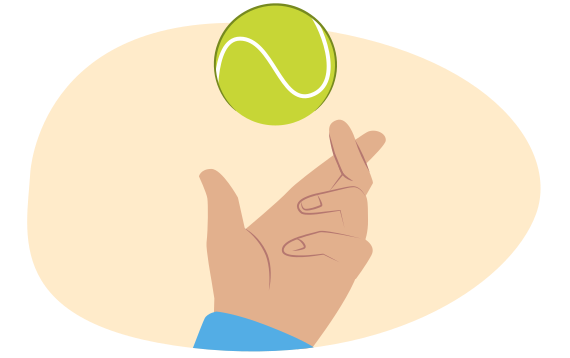
공을 공중으로 위로 던지면 어떻게 되는지 생각해 보세요. 무슨 일이 일어날까요? 공이 올라갔다가 다시 내려온다는 것은 알고 있지만, 운동 전체에 걸쳐 속도는 어떻게 변할까요?
공은 운동의 정점에 도달할 때까지 느려집니다. 실제로 정점에서 잠시 멈춥니다. 그런 다음 다시 떨어지면서 속력이 빨라집니다. 공은 포사체이므로, 전체 시간 동안 9.8 m/s2 [아래]로 가속하고 있습니다. 위로 움직일 때 속도는 매초 9.8 m/s씩 감소하고, 아래로 움직일 때 속도는 매초 9.8 m/s씩 증가합니다.
이는 위로 던져진 물체가 올라가는 동안 매초 9.8 m/s씩 느려지고, 내려오는 동안 매초 9.8 m/s씩 빨라진다는 것을 의미합니다.
예제: 공중으로 위로 던진 공
옆의 그래프는 4.0 s 동안 공의 위치를 보여줍니다. 공은 처음에 위로 움직인 다음 다시 지면 가까이로 돌아오므로, 변위(displacement)는 실제로 0입니다.
이제 같은 4.0 s 동안 공의 위치를 살펴보세요.
v1 = 20.0 m/s [up] a = –9.8 m/s2 [up]
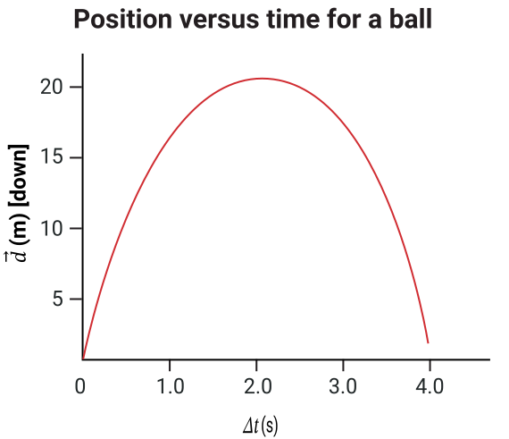
다음은 공중으로 던진 공의 시간에 따른 변위 값 표입니다.
| 0 | 0 |
| 0.5 | 8.8 |
| 1.0 | 15.1 |
| 1.5 | 19.0 |
| 2.0 | 20.4 |
| 2.5 | 19.4 |
| 3.0 | 15.9 |
| 3.5 | 10.0 |
| 4.0 | 1.6 |
옆의 속도-시간 그래프는 공이 느려지고, 방향이 바뀌고, 다시 속력이 증가하는 것을 보여줍니다. 수평축 위에 있는 선의 점들은 양의 속도 값을 가집니다. 이는 공이 위로 움직이고 있다는 것을 의미합니다.
수평축 위의 점은 속도 값이 0 m/s입니다. 그 점은 공이 방향을 바꾸는 시점을 나타냅니다. 수평축 아래에 있는 선의 점들은 음의 속도 값을 가집니다. 이는 공이 아래로 움직이고 있다는 것을 의미합니다. 그래프에서 공의 속도는 음의 기울기를 가진 선으로 나타납니다. 이 그래프의 기울기는 –9.8 m/s2이며, 방향은 아래쪽입니다.
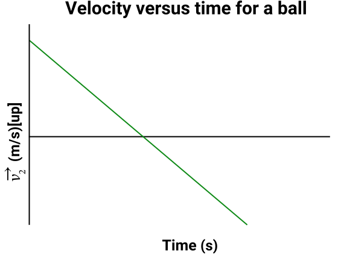
수평으로 발사된 물체
방금 수직 포사체 운동에 대해 배웠습니다. 예를 들어 물체를 공중으로 똑바로 위로 던지거나 똑바로 아래로 떨어뜨리는 것입니다. 이제 수평으로 발사된 포사체의 예를 생각해 보세요. 다음 다이어그램에 보이는 것처럼 절벽에서 공을 굴리는 것이 좋은 예입니다. 공은 절벽을 떠나 포사체가 될 때까지 수평 방향으로 움직입니다.
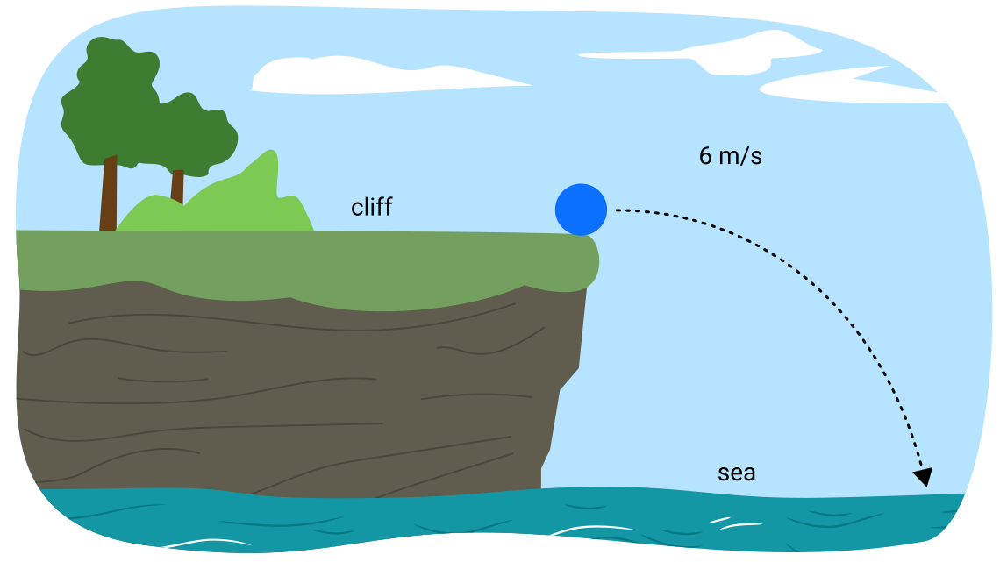
파란색 실선 화살표는 공이 절벽을 떠나는 순간의 속도를 나타내고, 주황색 점선은 중력이 작용하면서 물속으로 떨어지는 궤적을 나타냅니다.
이 공이 물에 닿는 데 걸리는 시간은 똑바로 아래로 떨어뜨린 공과 비교하면 어떨까요?
탐구해 보기!
다음 동영상을 탐구해 보세요. 똑바로 아래로 떨어지는 물체와 수평으로 발사된 물체의 운동을 비교하여 보여줍니다.
이전 동영상에서 두 공이 동시에 땅에 닿는 것을 확인할 수 있습니다. 두 공의 운동 그래프는 공 던지기 예제의 그래프와 유사합니다. 공들이 떨어질 때 지면으로부터의 높이가 동일하게 유지되는 것에 주목하세요.
직접 해보기!
직접 실험해 보세요. 무게나 수평 속도가 차이를 만들까요?
책상이나 평평한 표면 위에 10원짜리 같은 작은 동전과 500원짜리 같은 큰 동전을 책상 가장자리에서 약 5 cm 떨어진 곳에 나란히 놓으세요. 두 동전을 동시에 수평으로 튕기세요. 어느 동전이 먼저 바닥에 닿나요?
다른 “튕기기” 힘을 시도해 보세요.
무엇이 변하나요?
참고: 기기의 슬로우 모션 카메라를 사용하면 동전이 바닥에 닿는 순간을 관찰하는 데 도움이 됩니다.
수평 및 수직 속도 성분 분석
다음 다이어그램을 살펴보세요. 두 공이 땅을 향해 떨어지는 운동을 보여줍니다. 왼쪽의 공 A는 초기 하향 속도 없이 선반에서 떨어뜨렸습니다. 오른쪽의 공 B는 초기 하향 속도는 없지만 작은 수평 속도를 가지고 선반에서 굴려 떨어뜨렸습니다.
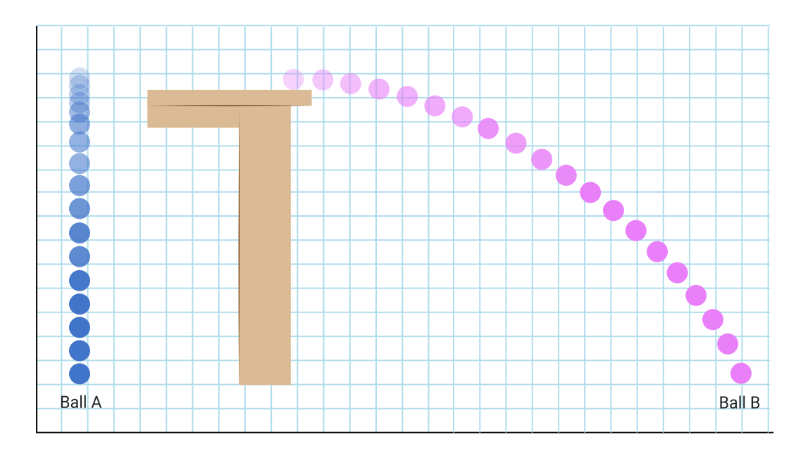
수평으로 움직이는 동안에도, 공 B는 공 A와 마찬가지로 9.8 m/s2로 아래쪽으로 계속 가속합니다. 유일한 차이점은 수평 속도입니다. 공 A는 수직으로만 움직이므로 수평 속도가 0 m/s입니다. 공 B의 수평 속도는 0이 아닙니다. 다음 다이어그램은 공 B의 속도 벡터(velocity vector)를 보여줍니다.
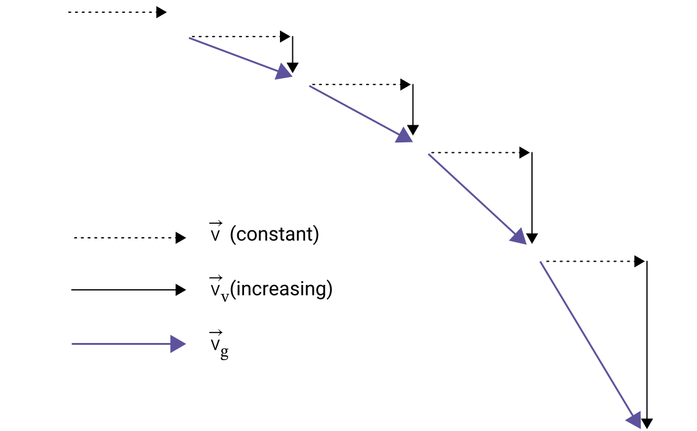
참고: 수평 속도 벡터(점선)는 운동 전체에 걸쳐 크기가 같습니다. 수평 속도는 일정합니다.
수직 속도 벡터(가는 선)는 운동 전체에 걸쳐 증가합니다. 수직 속도는 아래쪽으로 가속됩니다.
포사체의 수직 운동과 수평 운동은 서로 독립적이며 별도로 분석할 수 있습니다.
포사체 운동의 이해는 세 가지 핵심 개념에 기반합니다.
- 수평 속도 벡터는 모두 같은 크기입니다: 일정한 수평 속도, 수평 방향으로 가속도 없음.
- 수직 속도 벡터는 점점 커지며, 중력 가속도로 인해 수직 속도가 변합니다.
- 수평 속도와 수직 속도는 서로 독립적이므로 별도로 분석할 수 있습니다.
문제 풀이
이제 위에서 언급한 두 가지 상황에 운동 방정식을 어떻게 적용할 수 있는지 공부해 봅시다.
포사체의 수평 운동
가속도 없음. 등속도. 하나의 방정식만 사용됩니다.
이 공식은 수평 속도와 수평 변위에 사용되므로 아래 첨자 x를 사용합니다.
포사체의 수직 운동
각 방정식에서 9.8 m/s2 [아래]의 가속도를 사용합니다. 다음 방정식 중 어느 것이든 사용할 수 있습니다:
풀이를 전달할 때 x(수평 운동)와 y(수직 운동)의 아래 첨자를 사용하는 것이 편리합니다. 이는 수평 운동과 수직 운동이 서로 독립적이며 별도로 계산해야 한다는 것을 상기시켜 줍니다.
예제: 수평으로 발사된 물체
이제 이 정보를 사용하여 수평으로 발사된 물체와 관련된 문제를 풀어봅시다.
이전 문제에서 18 m 높이의 발코니에서 수직으로 떨어뜨린 화분은 착지하는 데 1.9 s가 걸렸습니다. 화분이 실수로 초기 수평 속도 8.0 m/s로 발코니에서 던져졌다면, 건물 바닥으로부터 어디에 착지할까요?
주어진 값:
| 수직 | 수평 |
|---|---|
미지수:
방정식:
수평 방향에서는 거의 항상 같은 방정식을 사용합니다:
풀이:
화분의 수평 이동 방향을 양의 방향으로 설정합니다.
결론:
화분의 초기 수평 속도가 이면, 건물에서 떨어진 곳에 착지할 것입니다.
노트
이제 노트에서 이 문제를 풀어보세요. 계산을 마친 후 예시 답안과 비교하여 이해를 확인하세요.
1. 공의 수평 속도는 3.2 m/s입니다. 공은 바닥에서 1.5 m 높이의 테이블에서 굴러 떨어집니다.
a) 주어진 수직 및 수평 정보의 표를 만드세요.
b) 공이 땅에 닿는 데 걸리는 시간을 계산하세요.
c) 테이블로부터 얼마나 먼 곳에 공이 착지할까요?
| 수직 | 수평 |
|---|---|
미지수:
방정식:
나중 속도를 포함하지 않는 방정식을 선택합니다.
풀이:
[아래]를 양의 방향으로 설정합니다.
포사체 운동 문제는 종종 이차방정식을 만들게 됩니다. 근의 공식을 사용할 수 있고, 이 경우처럼 초기 속도가 0인 경우에는 인수분해가 도움이 될 수 있습니다. 이 문제는 어느 방법으로든 풀 수 있습니다. 이후 예제에서 근의 공식을 사용하여 다른 방법을 보여줄 것입니다.
0 곱하기 시간은 여전히 0이므로:
양변의 제곱근을 구합니다.
결론:
공이 땅에 닿는 데 걸리는 시간은 입니다.
미지수:
방정식:
풀이:
앞쪽 한 방향으로만 작업하고 있으므로, 그것을 양의 방향으로 설정합니다.
물리학에서의 중요한 참고사항: 이전 문제의 값을 대입할 때, 예를 들어 여기서의 시간처럼, 전체 계산 값을 사용하세요. 유효 숫자 때문에 반올림한 값을 사용하지 마세요. 계산기에 전체 숫자를 유지한 채로 그 결과를 사용하는 것이 가장 좋습니다. 그것이 실용적이지 않다면, 소수점 이하 몇 자리를 추가로 유지하고 그 숫자를 사용하세요.
결론:
공은 테이블로부터 떨어진 곳에 착지할 것입니다.
- 발사 속력이 증가하지만 각도는 동일할 때 수평 변위는 어떻게 되나요?
수평 변위가 증가합니다.
- 발사 속력은 동일하지만 각도가 증가할 때 수평 변위는 어떻게 되나요?
수평 변위가 감소합니다.
- 발사 속력이 동일할 때 최대 변위를 얻기 위해 필요한 각도는 얼마인가요?
45° (또는 135도)
각도로 발사된 포사체
실생활에서 포사체는 종종 각도로 발사됩니다. 축구공을 공중으로 차거나, 골프공을 치거나, 미식축구공을 던지는 것을 생각해 보세요. 포사체의 초기 속도는 수평에 대해 일정 각도를 이루고 있습니다. 이는 수평 방향의 초기 속도(여전히 일정한)뿐만 아니라 수직 방향의 초기 속도도 있다는 것을 의미합니다(이로 인해 시간을 구하는 것이 복잡해질 수 있습니다).
초기 속도 성분 구하기
포사체가 각도로 발사될 때, 수평 포사체에서와 같은 방법으로 풀이합니다. 두 가지 주요 차이점이 있습니다. 첫째, 초기 속도를 수직 성분과 수평 성분으로 나누는 추가 단계가 필요합니다. 둘째, 시간을 구할 때 이차 방정식의 근의 공식(quadratic formula)을 사용해야 합니다.
각도와 유효 숫자(significant digits)
포사체 운동 문제에서도 유효 숫자 규칙을 계속 적용합니다. 이 계산에 영향을 미치는 중요한 참고 사항이 있습니다. 각도가 주어지면, 유효 숫자를 결정할 때 그 각도를 고려할 필요가 없습니다. 예를 들어, 속도가 27.00 m/s이고 각도가 8°인 경우, 최종 답은 여전히 유효 숫자 4자리를 가질 수 있습니다 - 각도의 한 자리 숫자는 이 결정에 영향을 미치지 않습니다.
예제: 삼각법을 사용한 수평 및 수직 성분
다음 이미지는 축구공이 20 m/s [수평 위 15°]로 차여지는 것을 보여줍니다.
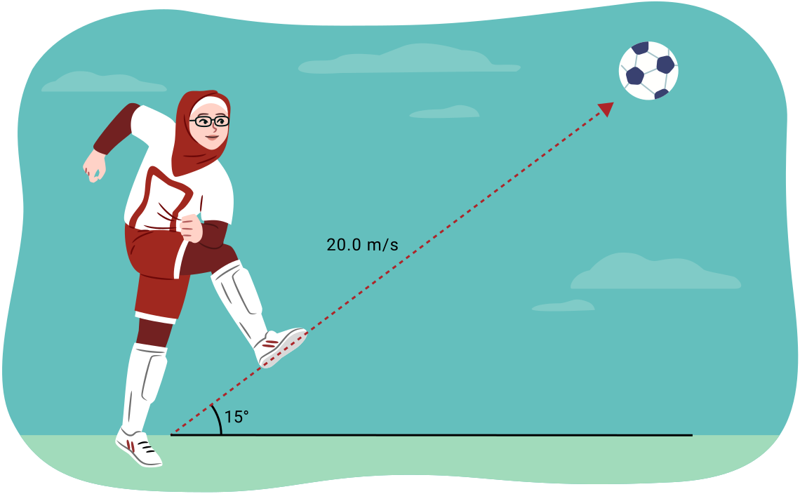
이 속도를 수직 및 수평 성분으로 분해하는 것이 도움이 됩니다. 중력 가속도는 이 공의 수직 운동에 영향을 미치지만, 수평 속도에는 영향을 미치지 않습니다. 이전에 수직 벡터를 사용하여 합력 벡터(resultant vector)를 구했습니다. 이제 역으로 수직 성분을 구해야 합니다. 삼각비가 매우 유용합니다.
다음 다이어그램과 같이 삼각형을 설정합니다.
빗변과 각도의 값이 있으므로, 사인과 코사인 관계를 사용하여 대변과 인접변의 길이를 구할 수 있습니다.
- vy는 속도(v)의 수직 성분입니다.
- vx는 속도(v)의 수평 성분입니다.
필요한 변수를 분리하면:
따라서, 20 m/s [수평 위 15°]로 차인 축구공의 이 예에서:
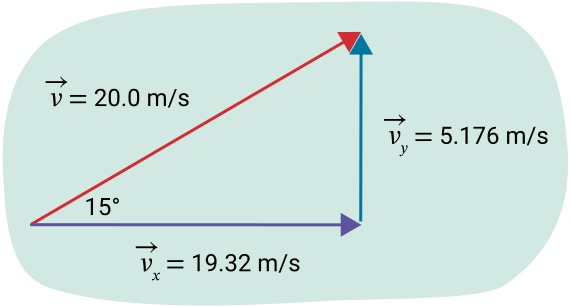
따라서 속도의 수직 성분은 5.18 m/s [위]이고 속도의 수평 성분은 19.3 m/s [앞]입니다.
노트
다음 벡터의 수직 및 수평 성분을 노트에서 구하세요. 답과 비교하여 이해를 확인하세요.
- 4.0 cm [수평 위 10°]
- 52 km/h [수평 위 25°]
- 12 m/s [수평 위 45°]
예제 1: 수직 변위가 주어졌을 때
축구공을 차는 것을 생각해 보세요. 공은 지면에서 시작하여 지면에 착지합니다. 골프공을 칠 때도 같은 일이 일어납니다. 이 경우, 수직 변위 입니다. 시작 높이와 끝 높이가 같기 때문입니다.
20.0 m/s [수평 위 15°]로 차인 축구공의 같은 예를 사용하여, 다음 문제와 제공된 풀이를 살펴보세요.
1. 축구공의 체공 시간(hang time, 공이 공중에 머무는 시간)은 얼마인가요?
주어진 값:
(공이 공중으로 올라갔다가 다시 땅에 닿으려는 상황을 분석하고 있으므로.)
미지수:
방정식:
나중 속도를 포함하지 않는 방정식을 선택합니다.
풀이:
먼저, 양의 방향을 지정합니다. 그런 다음 초기 속도의 수직 성분을 구합니다. 풀이를 기록할 때, 이 단계를 풀이의 "풀이:" 부분이나 "주어진 값:" 부분에 포함할 수 있습니다. 어느 곳이든 적절합니다. 어느 쪽이든 풀이 과정을 보여주세요.
[위]를 양의 방향으로 설정합니다.
방향에 주의하세요: 가속도는 [아래]이지만, [위]를 양의 방향으로 설정했습니다. 따라서 가속도에 음의 부호가 필요합니다.
이 이차방정식은 한쪽이 0이므로, 근의 공식을 사용하는 대신 공통 인수 t를 빼낼 수 있습니다. 변위가 0이 아닌 다른 값이었다면 시간을 구하기 위해 근의 공식을 사용해야 했을 것입니다.
t가 포함된 항을 반대편으로 이항합니다.
결론:
축구공의 체공 시간은 1.1초입니다. (가속도 9.8 m/s²가 유효 숫자 2자리이므로 2자리로 반올림했습니다.)
2. 공은 차인 지점에서 얼마나 멀리 착지할까요?
수평 운동은 등속도임을 기억하세요.
반올림한 값이 아닌, 시간과 수평 속도의 전체 값을 사용했다는 점에 유의하세요.
결론:
공은 앞으로 떨어진 곳에 착지할 것입니다.
예제 2: 수평 변위가 주어졌을 때
심판이 축구공을 수평 위 30° 각도로 15 m/s의 속도로 차는 선수의 10.0 m 앞에 서 있습니다. 심판의 키는 1.4 m입니다. 공이 심판에게 맞을까요?
풀이 1단계:
공의 운동에 대한 초기 수직 및 수평 성분을 구하는 것부터 시작합시다. 이 문제는 공이 수평으로 10.0 m 이동한 후의 높이를 구하고, 그 높이가 1.4 m보다 높은지(이 경우 심판을 피함) 또는 1.4 m보다 낮은지(이 경우 맞음)를 확인하는 것으로 생각할 수 있습니다.
속도의 수평 성분은 직각삼각형의 인접변이므로, 코사인 비를 사용할 수 있습니다.
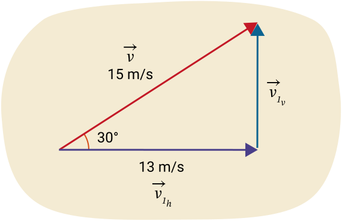
다음 다이어그램에 따르면, 수직 성분의 공식은 다음과 같습니다.
다음 다이어그램은 축구공과 심판의 위치를 시각적으로 나타낸 것입니다.
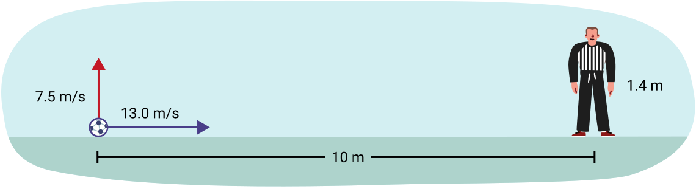
풀이 2단계:
다음으로 수평 운동을 살펴봅시다. 수평 운동은 등속이므로, 공은 10.0 m 거리를 13 m/s로 계속 이동합니다.
공이 심판에게 도달하는 데 얼마나 걸릴까요?
주어진 값:
미지수:
방정식:
풀이:
결론:
공이 심판에게 도달하는 데 0.77 s가 걸립니다.
풀이 3단계:
걸리는 시간을 알았으므로, 수직 변수를 사용하여 그 시점에서 공의 높이를 구할 수 있습니다. 공이 심판을 지날 때 높이는 얼마인가요?
주어진 값:
[위]를 양의 방향으로 설정합니다.
(계산에는 반올림한 값이 아닌 전체 값을 사용합니다)
미지수:
방정식:
나중 속도를 포함하지 않는 방정식을 선택합니다.
풀이:
이 값은 양수이므로 [위] 방향입니다.
결론:
공이 심판을 지날 때, 공은 지면에서 2.9 m 높이에 있습니다. 이는 심판의 키보다 높으므로, 공은 심판에게 맞지 않을 것입니다.
예제 3: 근의 공식이 필요한 경우
공이 18.000 m/s [수평 위 58°]의 속도로 발사됩니다. 공이 지면에서 8.0 m 높이에 있는 시간은 언제인가요?
이 문제의 풀이에는 근의 공식의 사용이 필요합니다.
주어진 값:
[앞]과 [위]를 양의 방향으로 설정합니다.
[수평 위 58°]
미지수:
방정식:
나중 속도를 포함하지 않는 방정식을 선택합니다.
풀이:
먼저, 초기 속도의 수직 성분을 구합니다.
대입하면, t를 변수로 하는 이차방정식을 얻습니다.
근의 공식은 다음과 같습니다:
공식
근의 공식
이면, 방정식을 참으로 만드는 의 두 값은 다음과 같습니다:
, 여기서 ± 부호(더하기 또는 빼기)는 하나의 해는 그 자리에 더하기를 사용하여 구하고, 다른 해는 빼기를 사용하여 구한다는 의미입니다. 수식 편집기에서 이 기호는 “\pm” 단축키로 입력할 수 있습니다.
근의 공식을 사용하려면 식이 0이 되어야 합니다. 따라서 모든 항을 등호의 한쪽으로 모아야 합니다. 변위를 반대편으로 이항합시다.
근의 공식을 사용하려면 계수를 확인합니다.
음수 부호에 주의하세요! 근의 공식에 포함해야 합니다.
대입하는 동안 잠시 단위를 무시하고, 대신 를 사용하면,
두 시간 값을 직접 계산해 본 다음, 나머지 예시 답안을 확인해 보세요.
제곱근 안의 값을 정리합니다. 수식 편집기에서 제곱근 기호는 “\sqrt” 단축키로 입력할 수 있습니다.
이제 제곱근을 계산합니다.
그리고 각 값을 따로 계산합니다.
”더하기”의 경우:
”빼기”의 경우:
따라서 두 시간은 0.67초와 2.4초입니다. 첫 번째 시간은 공이 올라가는 도중에 해당하고, 다른 하나는 공이 내려오는 도중에 해당합니다.
노트
다음 포사체 운동 문제를 풀어보세요. 완료한 후 예시 답안과 비교하세요.
- 동전을 소원의 우물에 떨어뜨렸더니 우물 가장자리에서 3.6 m 아래의 수면에 닿았습니다.
- 이것은 어떤 유형의 운동의 예인가요?
이것은 수직 포사체 운동입니다 - 수평 성분이 없습니다.
- 동전이 수면에 닿는 데 얼마나 걸리나요?
주어진 값:
[아래]를 양의 방향으로 설정합니다.
미지수:
방정식:
나중 속도가 없는 방정식을 사용합니다.
풀이:
결론:
동전이 수면에 닿는 데 0.86초가 걸립니다.
- 동전이 수면에 닿을 때의 속도는 얼마인가요?
이 문제는 여러 가지 방법으로 풀 수 있습니다. 처음에 세 가지 정보(초기 속도, 가속도, 변위)가 주어졌습니다. 이제 시간도 알고 있습니다. 네 가지 정보를 모두 갖추었으므로, 나중 속도를 포함하는 방정식 중 어느 것이든 사용할 수 있습니다. 이 예시 답안에서는 그 중 하나를 선택하지만, 다른 방법도 가능하며 동등하게 유효합니다.
주어진 값:
[아래]를 양의 방향으로 설정합니다.
미지수:
방정식:
이 방법에서는 시간이 포함되지 않는 방정식을 선택합니다. 앞서 언급한 것처럼, 다른 방법도 가능합니다.
풀이:
양변에 제곱근을 취합니다.
결론:
동전이 수면에 닿을 때의 속도는 8.4 m/s [아래]입니다.
- 한 청소년이 해수면 위 12 m 높이의 절벽에서 35 km/h [앞] 의 속도로 바위를 수평으로 던집니다.
- 이것은 어떤 유형의 운동의 예인가요?
이것은 수평 발사 포사체 운동입니다 - 수평 속도는 있지만 초기 수직 속도는 없습니다.
- 바위는 얼마나 오래 공중에 있을까요?
주어진 값:
[아래]와 [앞]을 양의 방향으로 설정합니다.
(3.6으로 나누어 m/s로 변환합니다.)
미지수:
방정식:
풀이:
결론:
바위는 바다에 도달하기 전 1.6초 동안 공중에 있을 것입니다.
- 바위가 절벽 바닥에서 18 m 떨어진 부표에 맞을까요?
주어진 값:
[아래]와 [앞]을 양의 방향으로 설정합니다.
미지수:
이 문제는 바위가 수평으로 18 m 이상 갈 것인지, 아니면 18 m 미만으로 갈 것인지를 묻고 있습니다.
방정식:
풀이:
결론:
바위는 부표에 맞지 않을 것입니다. 너무 일찍 물에 떨어질 것입니다.
- 골퍼가 수평 위 72° 각도로 51 m/s의 속도로 공을 칩니다.
- 이것은 어떤 유형의 운동의 예인가요?
이것은 각도로 발사된 포사체 운동입니다.
- vy와 vx를 구하세요.
주어진 값:
미지수:
방정식:
삼각비를 참고하면,
풀이:
결론:
수직 성분은 48 m/s [위]이고 수평 성분은 16 m/s [앞]입니다.
- 공은 착지하기 전에 얼마나 멀리 이동할까요?
여러 가지 방법이 가능하지만, 한 가지 방법은 다음과 같습니다:
주어진 값:
[앞]과 [위]를 양의 방향으로 설정합니다.
(골프공이 지면에 돌아오는 시점을 구하기 때문입니다)
미지수:
방정식:
체공 시간을 구하기 위한 방정식도 필요합니다.
풀이:
먼저 수직 방향을 사용하여 체공 시간을 구합니다.
정리합니다.
양변을 시간으로 나눕니다.
이것이 체공 시간입니다. 수평 방향에서 이를 사용하여 변위를 구합니다.
결론:
공은 착지하기 전에 160 m를 이동할 것입니다. (중력 9.8 m/s²에 유효숫자가 2개이므로 유효숫자 2자리로 표현합니다.)

노트
이 학습 활동의 시작 부분에서 포사체가 얼마나 멀리, 얼마나 정확하게 발사되는지에 영향을 미치는 요인에 대해 생각해 보도록 했습니다. 이제 포사체가 발사되는 초기 속도와 각도가 두 가지 중요한 요인임을 이해했을 것입니다.
마무리 과제로, 노트에 다음 각각의 경우를 풀기 위한 전략을 기록하세요:
- 떨어뜨린 물체 (수직 낙하)
- 아래로 던진 물체
- 위로 던진 물체
- 수평으로 던진 물체
- 각도로 던진 물체
노트에 다음 내용을 반드시 포함하세요:
- 포사체가 겪는 운동의 스케치를 그리세요.
- 문제를 풀 때 어떤 방정식이 유용한가요?
- 문제를 풀기 위해 어떤 가정이나 알려진 값이 있나요?
복습
어휘 복습: 이 학습 활동과 관련된 단어의 정의를 확인하세요. 포사체 운동의 맥락에서 이 단어들을 사용한 짧은 문단을 작성하세요.
자기 점검 퀴즈
이해도를 확인하세요!
다음 자기 점검 퀴즈를 완료하여 학습 진행 상황과 집중해야 할 영역을 파악하세요.
이 퀴즈는 피드백 용도로만 사용되며 성적에 포함되지 않습니다. 무제한으로 응시할 수 있습니다. 시간을 갖고 최선을 다하며, 제공된 피드백을 되돌아보세요.
퀴즈 버튼을 눌러 이 도구에 접근하세요.